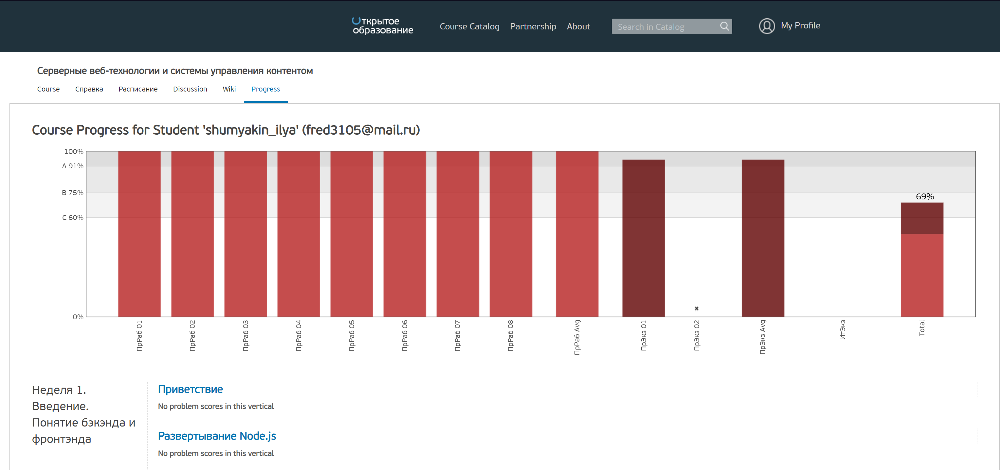

Студент РГПУ им.Герцена факультета ИИТиТО 2ИВТ(2)
Дисциплина "Веб-проектирование и веб-языки 3 семестр"
Дисциплина "Серверные Веб-Технологии 4 семестр"
Создайте «наименьший» и «строжайший» DTD по определённому файлу.
Часть I: Разработайте JSON-структуру для человекочитаемого представления того же документа, DTD которого разрабатывается в задании по DTD.
Часть II: Возьмите документ, созданный в первой части и разработайте или сгенерируйте схему для него с дальнейшей валидацией.
В ходе выполнения курса на портале openedu.ru необходимо было выполнить практические задания для недель 1-9.
Название курса: "Серверные веб-технологии и системы управления контентом".
В ходе выполнения курса на портале openedu.ru необходимо было выполнить тестовые задания для недель 1-9.
Название курса: "Серверные веб-технологии и системы управления контентом".
